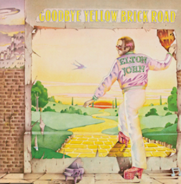

When are you gonna come down? When are you going to land? I should have stayed on the farm I should have listened to my old man
You know you can't hold me forever I didn't sign up with you I'm not a present for your friends to open This boy's too young to be singing The blues, ah, ah
So goodbye yellow brick road Where the dogs of society howl You can't plant me in your penthouse I'm going back to my plough
Back to the howling old owl in the woods Hunting the horny back toad Oh, I've finally decided my future lies Beyond the yellow brick road Ah, ah
What do you think you'll do then? I bet they'll shoot down the plane It'll take you a couple of vodka and tonics To set you on your feet again
Maybe you'll get a replacement There's plenty like me to be found Mongrels who ain't got a penny Sniffing for tidbits like you On the ground, ah, ah
So goodbye yellow brick road Where the dogs of society howl You can't plant me in your penthouse I'm going back to my plough
Back to the howling old owl in the woods Hunting the horny back toad Oh, I've finally decided my future lies Beyond the yellow brick road Ah, ah